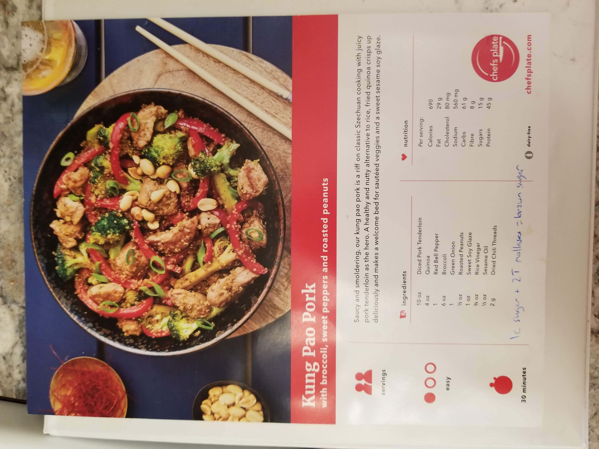

Stir Fry Sauce https://www.tasteslovely.com/best-stir-fry-sauce/
This is a quick stirfry that tastes great due to the peanut butter sauce
- 1/2 cup low sodium soy sauce (or Tamari if gluten free)
- 1/2 cup chicken stock (or vegetable broth if vegan)
- 1 tablespoon corn starch (or arrow root)
- 1 tablespoon honey (or agave nectar if vegan)
- 1 teaspoon sesame seed oil
- 1 teaspoon rice vinegar
- 2 inch piece of ginger, peeled and grated or finely minced (or 1 tablespoon ginger paste in a squeeze tube, and other readers have had success with 1 tablespoon ground powdered ginger)
- 2 garlic cloves, grated or finely minced
- Vegetables and meat of your choosing for the stir fry (I get my meat from ButcherBox, which I highly recommend)
- do the rice first! or pasta later
- make the sauce
- cook the meat
- add the veggies
